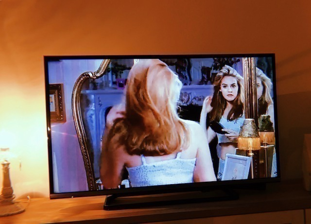

2018/1003Wed床が落ち着く。

最近は、毎日
ホットギミックの撮影をしています
妹の茜役の子とも仲良くなりました
本当の妹みたいに可愛くて
いつもハグしてます♡
撮影、引き続き頑張ります
何となくではありますが
自己紹介をしたいと思います
岐阜県出身 21歳 O型
出身地の岐阜は水や空気が綺麗で
君の名は。や聲の形や半分青い
の舞台にもなったり
自然たくさんで街並みも和な感じで
素敵な自慢の地元です
人や時間もまったり〜
O型だなぁと思うのは
蚊に刺されやすいところと
マイペース人間なところかな
母と姉はA型なのでA型っぽい部分も
あるらしいです
布団や洋服のシワ、時間や
リモコンの位置や家具のズレは気になる派です
好きな食べ物は里芋とひじき以外なら
何でも好きですが
特にお肉が大好きで1日1お肉は食べます
焼肉ではミノとセンマイ刺しとタンを！
餃子も大好物です
お寿司や海鮮も好きでハマグリとか
大アサリの浜焼きやウニ、カニなどが好きです
海まで行って食べ歩きもよくします
甘いものは苦手ですが
和菓子は食べれます
フルーツは特に桃とみかんが好き
◯◯狩りに行きたいのですが
なかなか行けてません...
性格を自己分析すると
マイペースで忘れっぽくて
負けず嫌いでポジティブ思考です
人を楽しませたり笑顔にすることが
好きです
口癖は
眠たい お腹すいた 忘れちゃったです
聞き間違いがひどいので
どうやら耳が遠いらしいです
何卒よろしくお願いします
趣味は映画鑑賞、美術館巡り、旅行、
お買い物、コスメ集めで
カメラも好きでたまに持ち歩いて
撮ったりしています
フィルム、チェキ、写ルンです、一眼を
使い分けています
全然上手くはないですが
忘れっぽい自分の記憶の一部となるし
瞬間の美しさを形に残して
大切にしたいと思っているので
自己満の趣味です
母をたくさん撮ってます
あとメンバー！
料理も趣味なのですが
最近は煮物のレパートリーを
増やしていきたいなと考えています
ドライカレー
ひき肉のあんかけ団子
かぼちゃの煮付け
豚肉の梅しそ巻き
が今のところ得意な料理たちかな...
食器集めは2年前からしていて
この間はarの連載で陶芸に挑戦して
湯のみとお皿を作りました！
オシャレな食器たくさん集めたいな
映画はお家でも観ますし
映画館でも観ます
ふらっと何となく観るのもあるし
絶対観ようと決めて観るのもあるし
特に調べたりもせず予備知識無しで
映画を観るのが好きです
人との出会いみたいに
一期一会なところにドキドキ。
乃木坂に入ってから、
そしてarのレギュラーモデルを
やらせていただくようになってから
より洋服やコスメが好きになって
時間があればファッションサイトを見たり
オシャレな人のコーディネートを見たり
ファッション雑誌を読んだりします
映画からヒントを得ることも
たくさんあります
最近好きなブランドさんは
ロザリームーン
FUR FUR
ハニーミーハニーです
ヨーロッパの女の子みたいな
白肌に個性的な洋服に赤リップ！
みたいなのがマイブームです
ヴィンテージの物も取り入れます
幼稚園からお抹茶やお茶が好きで
茶道をしていました
お茶が好きすぎる故に
いつかお茶漬け屋さんを
開きたいなと思っています
中学の頃は陸上部だったので走るのが
地味に得意です
ずっと好きな色は、白です！
その時々でブームな色は変わりますが
今はブルーと紫をよく身につけます
好きなタイプをよく聞かれるので...
包容力があって優しくて
中身が大人な人がいいです
一緒にいてまったりできるような
気を遣わない関係に憧れます
ホラー映画は大好きですが
心霊体験やおばけ屋敷、怖い話は
大の苦手です
ざっとこんな感じです！
何となくこのブログを見た方にも
何となく
知っていただけたら
嬉しいなー
早めにお仕事が終わった日に
お家でクルーレスっていう
映画を観ました

オシャレで可愛くてきゅんきゅん
この映画を見てから
黄色のチェックシャツが可愛くて
今気になってます
まだまだ観たい映画が溜まっていて...
猟奇的な彼女
きみに読む物語
ガールボス
イヴ・サンローラン
シスターズ
サイテーハイスクール
ビッグフィッシュ
いつ見れるかなぁ
よく握手会で聞かれるので
わたしが今まで観た中で
特に印象に残っている映画を
カテゴリ別にしておススメしてみますと、、
癒されたいとき
・魔女の宅急便
・ヘイフラワーとキルトシュー
・ビバリーヒルズチワワ
泣きたいとき
・ぼくは明日昨日のきみとデートする
・湯を沸かすほどの熱い愛
・タイヨウのうた
オシャレしたいとき
・アメリ
・プラダを着た悪魔
・お買い物中毒な私
ハラハラしたいとき
・テキサスチェーンソー
・プレデターシリーズ(1のシュワちゃんを是非)
・バイオハザードシリーズ
世界観に浸りたいとき
・渇き。
・ルーム
・かもめ食堂
きゅんきゅんしたいとき
・シンデレラストーリー
・溺れるナイフ
・陽だまりの彼女
です
観てみてください！
もちろん
ホットギミック も
是非観ていただきたいです
そして22枚目シングル
今回も選抜に選んでいただきました
ありがとうございます！
1列目2列目3列目アンダーと
今までに色んな位置を
経験させていただきました
今回は、この2列目のポジションで
自分なりに輝けるよう
全力を尽くします
諦めは私の中で負けたことになるので
今のこの素直な気持ちを忘れずに、
応援して下さる皆さんの笑顔を見る為にも、
まだまだ頑張りたいと思います
センターの七瀬さん
そしてポジションが隣の若月さん
二人が今年卒業されます
色んなメンバーの旅立ちがあります
正直めちゃくちゃ寂しいです、今はまだ。
でも大好きなメンバーだからこそ
悩みに悩んで決心した新たな道を
応援できたらいいな...と思います
みんな、まだ旅の途中。
その旅の一部分に乃木坂46があって
この時代この場所で七瀬さん、若月さんに
出会えたことが本当に嬉しい
後輩思いで真面目な若さん
自分の個性を大切にし続けた七瀬さん
アイドルとしても人としても
お二人を近くで見てきて、
たくさんの事を学び、知りました
私も頑張らなくちゃ！
バトンちゃんと繋げます
そして楓、りりあ初選抜おめでとう〜
一緒に楽しもうね☺︎
楓とは手羽先の約束 りりあとはディズニーの
約束してるから早く果たせますように
2018年も残り3カ月、
色んな形に変わりゆく日々ですが
そんな不安定さが
より、今を生きている証であり
時代の証になっています
乃木坂46をこれからも変わらず
よろしくお願いしますm(._.)m

ちょっぴり早めですが
arの皆さんに22歳を祝っていただきました！
ポジティブに、
君らしく、
私らしく、！
長くなってごめんなさい、
では☺︎
2018/10/03 20:48
コメント(650)
いつからか堀ちゃんが好きで好きでたまらなくなってました…
 （笑）堀ちゃん世界観というか、堀ちゃんの人柄というのかな(？)にすごく引き込まれて気になりだしてメイクに服に髪型に。。。今ではもう全てが大好きで好きが溢れてます
（笑）堀ちゃん世界観というか、堀ちゃんの人柄というのかな(？)にすごく引き込まれて気になりだしてメイクに服に髪型に。。。今ではもう全てが大好きで好きが溢れてます

私事ながら、堀ちゃんのブログといい755といい見れるものは全て見るようにしていて そこでの堀ちゃんの言葉がすごい深いものが多くて何度も前を向けたし救われました
そこでの堀ちゃんの言葉がすごい深いものが多くて何度も前を向けたし救われました
 ほんとに感謝感謝です
ほんとに感謝感謝です 個握の1次うっかりしてしまっていたので2次で挽回できるように頑張ってあてて会いに行きますね
個握の1次うっかりしてしまっていたので2次で挽回できるように頑張ってあてて会いに行きますね とゆうか、まおが堀ちゃんに会いたいです（笑）しかも今回は関東圏の会場は4回あるので沢山会えますかもですねーーーーー
とゆうか、まおが堀ちゃんに会いたいです（笑）しかも今回は関東圏の会場は4回あるので沢山会えますかもですねーーーーー
 頑張りますね
頑張りますね
今日も一日お疲れ様でした。
明日も堀ちゃんにとっていい一日になること願ってます
まお
私事ながら、堀ちゃんのブログといい755といい見れるものは全て見るようにしていて
今日も一日お疲れ様でした。
明日も堀ちゃんにとっていい一日になること願ってます
まお
こんばんは。
映画撮影お疲れ様でした。
体調に気をつけて頑張ってくださいね。
応援しています。
映画撮影お疲れ様でした。
体調に気をつけて頑張ってくださいね。
応援しています。
みおちゃん更新ありがとう。
自己紹介改めてありがとう。
ある程度知っているつもりだったけど新たな面も知れて嬉しい。
明日生誕グッズが届きそうです。
楽しみ。
後10日あまりで22歳何か大人な響き。
応援していきます。
自己紹介改めてありがとう。
ある程度知っているつもりだったけど新たな面も知れて嬉しい。
明日生誕グッズが届きそうです。
楽しみ。
後10日あまりで22歳何か大人な響き。
応援していきます。
七瀬と若の卒業に落ち込んでいたけどレコメン聴きながらこのブログ読んでたら少しだけ元気が出て助かっちゃったよ、ありがとうございます
ペッコリ45度
ペッコリ45度
いまアメリカに留学中で中々未央奈の活躍を見ることができません。
日本に帰ったらまたいっぱい応援しますね！！
早いですが、誕生日おめでとう
日本に帰ったらまたいっぱい応援しますね！！
早いですが、誕生日おめでとう
未央奈の自己紹介が見れて嬉しいな(^-^)
改めて見ると、なんか新鮮な感じがするね（＾ν＾）
今年は今の時点で、卒業するメンバーが多い気がするし、乃木坂が一気に小さくなっていくように感じがして嫌だけど、乃木坂が一番好きだし、乃木坂がある限りずっと関わっていきたい大好きなので、改めてこれからもよろしくね！(^-^)
改めて見ると、なんか新鮮な感じがするね（＾ν＾）
今年は今の時点で、卒業するメンバーが多い気がするし、乃木坂が一気に小さくなっていくように感じがして嫌だけど、乃木坂が一番好きだし、乃木坂がある限りずっと関わっていきたい大好きなので、改めてこれからもよろしくね！(^-^)
どのポジションでも、全力で頑張るそんな未央奈をずっと応援してます！
頑張ってください！
頑張ってください！
未央奈お疲れ様！
大好きだ。
大好きだ。
素敵な言葉だらけな暖かなブログありがとうございます
ブログの更新ありがとう！
選抜おめでとう！
そして、あと11日先ですが、お誕生日おめでとう！
やっぱり別れは辛い？寂しい？よね。
けど、別れは互いに次のステージへ進んでいくからこそのものだから、沢山の大切な思い出を記憶に刻んで、祝福して送り出したいよね！
これからも応援してるよ！
選抜おめでとう！
そして、あと11日先ですが、お誕生日おめでとう！
やっぱり別れは辛い？寂しい？よね。
けど、別れは互いに次のステージへ進んでいくからこそのものだから、沢山の大切な思い出を記憶に刻んで、祝福して送り出したいよね！
これからも応援してるよ！
好きです！！！
と読んで思いました。更新ありがとうございます！
自己紹介のところを読んで涙出てきちゃいました。
その後の内容にも心打たれました。
とてつもなくいいブログすぎます。
一回コメント書いてたんですがエラーになってしまって、ただでさえまとまらない文章だったのでもう一度書き直せることはなく、とにかくこの気持ちを伝えるために書きました！笑
一期生の卒業はファンとしても寂しい以外ないですが、メンバーはきっともっと寂しいですよね。
限りある時間の中で悔いのない時間を過ごせますように！
「バトンちゃんと繋げます」てカッコイイ。
未央奈ちゃんは、二期生は、ぜったいやってくれると思います。
応援してます！！！
と読んで思いました。更新ありがとうございます！
自己紹介のところを読んで涙出てきちゃいました。
その後の内容にも心打たれました。
とてつもなくいいブログすぎます。
一回コメント書いてたんですがエラーになってしまって、ただでさえまとまらない文章だったのでもう一度書き直せることはなく、とにかくこの気持ちを伝えるために書きました！笑
一期生の卒業はファンとしても寂しい以外ないですが、メンバーはきっともっと寂しいですよね。
限りある時間の中で悔いのない時間を過ごせますように！
「バトンちゃんと繋げます」てカッコイイ。
未央奈ちゃんは、二期生は、ぜったいやってくれると思います。
応援してます！！！
未央奈ちゃんブログ更新ありがとう〜！
2期生が加入してきた時から未央奈ちゃん見てきて今日までずっと応援してきました。
こうやって言葉で私たちファンに色々伝えてくれる未央奈ちゃんがだいすきです。おすすめの映画観てみるねっ
ホットギミックの撮影引き続き頑張ってね！
映画館で観るの楽しみにしてる〜
arも今月号買わなきゃ！
いつもありがとうこれからも応援させてください︎☺︎だいだいだいだいだいすきです❤︎
2期生が加入してきた時から未央奈ちゃん見てきて今日までずっと応援してきました。
こうやって言葉で私たちファンに色々伝えてくれる未央奈ちゃんがだいすきです。おすすめの映画観てみるねっ
ホットギミックの撮影引き続き頑張ってね！
映画館で観るの楽しみにしてる〜
arも今月号買わなきゃ！
いつもありがとうこれからも応援させてください︎☺︎だいだいだいだいだいすきです❤︎
みおなありがとう。宮城個握握手とグータッチさせていただきました、すげ～綺麗で４４にもなってドキドキしてました。ずっと応援するからね。
みおなちゃんブログ更新ありがとう♪
ほんとにみおなちゃんの中身が大好きだよ♪
自己紹介改めてみおなちゃんのことがわかりました♪
映画撮影頑張ってね(*^^)v
応援してまーす♪
ほんとにみおなちゃんの中身が大好きだよ♪
自己紹介改めてみおなちゃんのことがわかりました♪
映画撮影頑張ってね(*^^)v
応援してまーす♪
未央奈の不意打ちの自己紹介にキュンとした。
やぁ(・∀・)ノ未央奈ちゃん♡こんばんは！ブログありがとう！
りょーへー(R.N.イナダウアーびーむ)だよ♪
こうして、改めて自己紹介するの、とってもよき！根っこは変わらないにしても、その時々のマイブームとかもあるもんね！知ってることがほとんどだし、改めてにはなるけど、未央奈ちゃんのことを色々と知れた気がする！
未央奈ちゃんの、今の気持ちを伝えてくれて、ありがとう！負けず嫌い、ポジティブ精神の未央奈ちゃんだから、きっと大丈夫！まだまだ、お互い、手を取り合いながら頑張っていこうね！
#今日もお疲れ様
#めちゃんこ眠いし
#電車遅れとるし
#困ったさんや
#心に留めておきたいけど
#吐き出しちゃいたいし
#難しいところだよなぁ
#明日も楽しみおな♡
#おやすみおな♪(/ω＼*)
りょーへー(R.N.イナダウアーびーむ)だよ♪
こうして、改めて自己紹介するの、とってもよき！根っこは変わらないにしても、その時々のマイブームとかもあるもんね！知ってることがほとんどだし、改めてにはなるけど、未央奈ちゃんのことを色々と知れた気がする！
未央奈ちゃんの、今の気持ちを伝えてくれて、ありがとう！負けず嫌い、ポジティブ精神の未央奈ちゃんだから、きっと大丈夫！まだまだ、お互い、手を取り合いながら頑張っていこうね！
#今日もお疲れ様
#めちゃんこ眠いし
#電車遅れとるし
#困ったさんや
#心に留めておきたいけど
#吐き出しちゃいたいし
#難しいところだよなぁ
#明日も楽しみおな♡
#おやすみおな♪(/ω＼*)
更新ありがとう！
お疲れ様でした！
選抜ともすぐお誕生日もおめでとうございます！
多くのことをしたいことを知っていることは本当にうれしい、 それが我々を前進させるものだよね。
他の人が出て行くのを見るのは本当に悲しいことですが、結局彼らは我々の生活の一部になったので、我々はまだかれらをいつも応援しています。
さぁ、堀様、あなたはもいつも頑張ってね
いつも応援しているよ
すっと大好き！
お疲れ様でした！
選抜ともすぐお誕生日もおめでとうございます！
多くのことをしたいことを知っていることは本当にうれしい、 それが我々を前進させるものだよね。
他の人が出て行くのを見るのは本当に悲しいことですが、結局彼らは我々の生活の一部になったので、我々はまだかれらをいつも応援しています。
さぁ、堀様、あなたはもいつも頑張ってね
いつも応援しているよ
すっと大好き！
新たな人との出会いがあり
自己紹介って難しいと思う今日この頃
自己の分析がよくできてるなって
感心してしまいました（´-`）.｡oO
自分のことって自分からは見えなかったりするから
ほんとに難しい、、
話は変わって選抜おめでとう！！
卒業する人が増えてくるなかで変化が多く
大変なこともあると思いますが
応援してますよ！！
明日生誕T届く予定( ✌︎'ω')✌︎
自己紹介って難しいと思う今日この頃
自己の分析がよくできてるなって
感心してしまいました（´-`）.｡oO
自分のことって自分からは見えなかったりするから
ほんとに難しい、、
話は変わって選抜おめでとう！！
卒業する人が増えてくるなかで変化が多く
大変なこともあると思いますが
応援してますよ！！
明日生誕T届く予定( ✌︎'ω')✌︎
撮影お疲れ様でした。
この前の握手会楽しかったよ〜ありがとう！
次もローソン店員服で行きますね。
明日からも撮影頑張ってください
この前の握手会楽しかったよ〜ありがとう！
次もローソン店員服で行きますね。
明日からも撮影頑張ってください
文章からも誠実な方だと読み取れます。
プレッシャーも糧に変えて、ますます素敵になられることでしょう。
天然に見せて気遣い屋さん。
これからも影ながら応援させて頂きます。
プレッシャーも糧に変えて、ますます素敵になられることでしょう。
天然に見せて気遣い屋さん。
これからも影ながら応援させて頂きます。
「不安定さがより、今を生きてる証」
この言葉に共感しました。これからも輝いていってください。どんな乃木坂も、これからも変わらずに応援してきますよ！
この言葉に共感しました。これからも輝いていってください。どんな乃木坂も、これからも変わらずに応援してきますよ！
堀ちゃん撮影お疲れ様です！
22選抜おめでとう！
また堀ちゃんが見れるから私も頑張ります！
22選抜おめでとう！
また堀ちゃんが見れるから私も頑張ります！
そんな未央ちゃん全て引っくるめて大好きです。陰で努力している姿もかっこいいです。応援してます！！
未央奈〜こんばんは〜 夜分にごめんなさい〜
夜分にごめんなさい〜 改めての自己紹介と可愛い写真をありがとう〜今まで知らなかった未央奈の事を知ることが出来て本当に嬉しいです
改めての自己紹介と可愛い写真をありがとう〜今まで知らなかった未央奈の事を知ることが出来て本当に嬉しいです 未央奈のえ？何がですか？のやり取り大好きなんだよね〜私は耳が遠いのも私は未央奈の魅力の一つだと思ってるからなあちゃんと若様の卒業は正直辛いけどようやく受け止められるようになりました苦しかったけどね〜なので２人のこの先の未来を応援し続けていこうと思います勿論未央奈のこともず〜っと応援し続けていくのでよろしくお願いしますね〜未央奈の紹介してくれた映画でまだ観てないのがあるので早速観てみようと思います
未央奈のえ？何がですか？のやり取り大好きなんだよね〜私は耳が遠いのも私は未央奈の魅力の一つだと思ってるからなあちゃんと若様の卒業は正直辛いけどようやく受け止められるようになりました苦しかったけどね〜なので２人のこの先の未来を応援し続けていこうと思います勿論未央奈のこともず〜っと応援し続けていくのでよろしくお願いしますね〜未央奈の紹介してくれた映画でまだ観てないのがあるので早速観てみようと思います
 ホットギミックも絶対観るよ〜２２枚目シングル選抜おめでとう〜次はまたフロント目指して一緒に頑張っていきましょう〜未央奈のことが大好きだよ〜お休みなさい〜
ホットギミックも絶対観るよ〜２２枚目シングル選抜おめでとう〜次はまたフロント目指して一緒に頑張っていきましょう〜未央奈のことが大好きだよ〜お休みなさい〜

がんばれー！
ホットギミック、すごく楽しみにしてるよ！
嬉しくて、いろんな友達に教えちゃった！！！
あはは
ホットギミック、すごく楽しみにしてるよ！
嬉しくて、いろんな友達に教えちゃった！！！
あはは
未央奈選抜おめでとう(≧▽≦)
なぁちゃんと若様の卒業発表ですごく寂しい気持ちがいっぱいだけど二人とも表情が清々しくて前向きなので泣きそうなのを必死で堪え笑顔で見送ってあげたいと心から思っているよ
残り短いけど二人との思い出いっぱい出来ると良いね
ホットギミック楽しみにしてるので体調気を付けて撮影頑張るんだよ～
なぁちゃんと若様の卒業発表ですごく寂しい気持ちがいっぱいだけど二人とも表情が清々しくて前向きなので泣きそうなのを必死で堪え笑顔で見送ってあげたいと心から思っているよ
残り短いけど二人との思い出いっぱい出来ると良いね
ホットギミック楽しみにしてるので体調気を付けて撮影頑張るんだよ～
みおなさんに元気貰ってます！
いつもありがとうございます！
22nd頑張って下さい！
応援しています♪
いつもありがとうございます！
22nd頑張って下さい！
応援しています♪
忙しい中たくさん書いてくれてありがとう
おすすめの映画見てみるね！
映画の撮影も乃木坂での活動も
未央奈らしくがんばれー
おすすめの映画見てみるね！
映画の撮影も乃木坂での活動も
未央奈らしくがんばれー
ブログ更新ありがとう。
22枚目選抜おめでとうございます。
若月さんと七瀬さんの参加する最後
の曲なので悔いのないように
応援していますので
頑張って下さい。
22枚目選抜おめでとうございます。
若月さんと七瀬さんの参加する最後
の曲なので悔いのないように
応援していますので
頑張って下さい。
連日の撮影お疲れさまです。
主演さんの撮影スケジュールとなるとタイトになっていませんか？
この作品を足がかりに、ワンランクアップできるといいですね。
プロフィールありがとう！
岐阜は冬場に数回訪れたことがありますよ。
高速道路の松本ICから安房峠トンネルを経由して
岐阜県北部のスキー場や温泉を満喫しました。
岐阜県南部は新幹線で通過するだけ。。
名古屋のイベントの時に訪問してみたいです。
映画はなかなか見る機会少なくなってきましたが
堀さん推しなってからは、心が映画の方向に再び傾きました。
ラインナップ是非参考にします！
22枚目シングルの選抜発表を耳にして、内心穏やかではありませんでした。
堀さん含めメンバーそれぞれの思いがあった思います。
気の利いた応援コメントは書けませんが
メンバーが卒業される中、乃木坂を輝かせるために頑張ってください。
その努力は後から個人についてくると思いますよ。
主演さんの撮影スケジュールとなるとタイトになっていませんか？
この作品を足がかりに、ワンランクアップできるといいですね。
プロフィールありがとう！
岐阜は冬場に数回訪れたことがありますよ。
高速道路の松本ICから安房峠トンネルを経由して
岐阜県北部のスキー場や温泉を満喫しました。
岐阜県南部は新幹線で通過するだけ。。
名古屋のイベントの時に訪問してみたいです。
映画はなかなか見る機会少なくなってきましたが
堀さん推しなってからは、心が映画の方向に再び傾きました。
ラインナップ是非参考にします！
22枚目シングルの選抜発表を耳にして、内心穏やかではありませんでした。
堀さん含めメンバーそれぞれの思いがあった思います。
気の利いた応援コメントは書けませんが
メンバーが卒業される中、乃木坂を輝かせるために頑張ってください。
その努力は後から個人についてくると思いますよ。
私もプラダを着た悪魔好きだよ！
アンハサウェイが好きで見たんだけどね、
マイ・インターンって映画もオススメだよ〜
アンハサウェイが好きで見たんだけどね、
マイ・インターンって映画もオススメだよ〜
みおな選抜おめでとう！
ホットギミック の撮影頑張って！
ホットギミック の撮影頑張って！
タイヨウのうた私も好きです！
ホットギミックも楽しみにしてます！
頑張ってください！！
ホットギミックも楽しみにしてます！
頑張ってください！！
クルーレス観たんだねぇ～アリシアシルバーストーンさん、かわいいよねぇ～大好きな映画です。
それと、猟奇的な彼女のチョンジヒョンさんも大好き!!
それと、猟奇的な彼女のチョンジヒョンさんも大好き!!
なんかまた未央奈をさらに知れた気がする笑
さすが映画好き〜詳しすぎる
選抜入りおめでと！応援してるよ
楽曲も楽しみだ〜
映画も頑張ってな！楽しいって聞くとこっちも嬉しいよ！！
さすが映画好き〜詳しすぎる
選抜入りおめでと！応援してるよ
楽曲も楽しみだ〜
映画も頑張ってな！楽しいって聞くとこっちも嬉しいよ！！
堀ちゃん、ブログ更新ありがとうございます。乃木坂工事中での22枚目シングル選抜発表を観ていました。連続して福神入りされている事、本当に凄い事だと感じます。堀ちゃんの隣に若月さん、堀ちゃんのポジションの斜め前に西野さん、佐藤さん・りりあさんは初選抜入りで乃木坂46の皆さんの絆を感じる日々です。堀ちゃんと若月さんと佐藤さんは東海地方の出身で、御3人とも選抜入りされた曲になるので、ものすごく楽しみにしております。
堀ちゃん、映画「ホットギミック」主演おめでとうございます。撮影、体調に気をつけながら挑んでくださいね。
堀ちゃん、映画「ホットギミック」主演おめでとうございます。撮影、体調に気をつけながら挑んでくださいね。
映画趣味変わってますね？シリーズ作品が一つも入ってないよ～(＾O)＝3
カテゴリー別すべてが入った映画がありますよ！！！マーベル映画作品の、
「ガーディアンズ・オブ・ギャラクシー」と
「マッドマックス・フューリーロード」と
「ベイビードライバー」は完璧作品。＼＾o＾／
ちなみに、オシャレホラー映画で「ロッキーホラーショー」と「ビートルジュース」と「バーバレラ」も！かなりオシャレで良いよ。
掘りさん、「ナチュラル・ボーン・キラーズ」とか、「２００１年宇宙の旅」とか「時計じかけのオレンジ」もオシャレで考えさせるからオススメ度高いです。
それじゃ撮影も頑張ってくださいm(__)m
カテゴリー別すべてが入った映画がありますよ！！！マーベル映画作品の、
「ガーディアンズ・オブ・ギャラクシー」と
「マッドマックス・フューリーロード」と
「ベイビードライバー」は完璧作品。＼＾o＾／
ちなみに、オシャレホラー映画で「ロッキーホラーショー」と「ビートルジュース」と「バーバレラ」も！かなりオシャレで良いよ。
掘りさん、「ナチュラル・ボーン・キラーズ」とか、「２００１年宇宙の旅」とか「時計じかけのオレンジ」もオシャレで考えさせるからオススメ度高いです。
それじゃ撮影も頑張ってくださいm(__)m
タイヨウのうためっちゃ好き！
未央ちゃんこんばんは
改めて未央ちゃんの事色々知れました
乃木坂を知って、未央ちゃんに出逢えて、同じ時代を生きれて幸せに思ってます。
未央ちゃんを見てると本当癒されます。映画の撮影も大変だろうけど頑張ってね
一期生が卒業してく中で、これから４期生も入ってくるし、これからは未央ちゃん達２期生が引っ張っていかないとね 頑張ってね応援してます。
岐阜県いいとこだよね 今ＮＨＫで丁度岐阜県のスーパーカミオカンデの事やってたよ 岐阜は空が綺麗だから宇宙の研究にいいみたい
また岐阜を旅してみたいです。
最近、朝晩は寒くなってきたから、体に気をつけてね
改めて未央ちゃんの事色々知れました
乃木坂を知って、未央ちゃんに出逢えて、同じ時代を生きれて幸せに思ってます。
未央ちゃんを見てると本当癒されます。映画の撮影も大変だろうけど頑張ってね
一期生が卒業してく中で、これから４期生も入ってくるし、これからは未央ちゃん達２期生が引っ張っていかないとね
岐阜県いいとこだよね 今ＮＨＫで丁度岐阜県のスーパーカミオカンデの事やってたよ 岐阜は空が綺麗だから宇宙の研究にいいみたい
また岐阜を旅してみたいです。
最近、朝晩は寒くなってきたから、体に気をつけてね
改めましての堀ちゃんProf、じっくり読み込んでしまった...(〃▽〃)笑 これからも堀ちゃんの魅力に惹かれる人はまだまだ増えてくだろうから、いろんな方法でアピールは大切だね♪♪ 22st選抜入りもおめでとぉ!!! 堀ちゃんの活躍、いつも楽しみ＆応援してるよぉ(*´-`)ﾉ
未央奈のことが丸わかりだね！！
堀未央奈の100のことみたいな企画が見たい！
オススメの映画も今度見てみようっと。
堀未央奈の100のことみたいな企画が見たい！
オススメの映画も今度見てみようっと。
ブログ更新ありがと〜
改めて自己紹介ありがと〜わかりやすく堀さんのことが知れて嬉しいです！映画とかも見てみたいと思います！
選抜おめでとう〜どの位置でも堀さんは輝いてるし、絶対見つけます！欲を言えばセンターにいつか立って欲しい、、、
卒業される2人を笑顔で送り出して、また新しい乃木坂の姿を見ることを楽しみにしています！堀さんのますますのご活躍を願ってます！ではでは。
改めて自己紹介ありがと〜わかりやすく堀さんのことが知れて嬉しいです！映画とかも見てみたいと思います！
選抜おめでとう〜どの位置でも堀さんは輝いてるし、絶対見つけます！欲を言えばセンターにいつか立って欲しい、、、
卒業される2人を笑顔で送り出して、また新しい乃木坂の姿を見ることを楽しみにしています！堀さんのますますのご活躍を願ってます！ではでは。
ブログ更新ありがとー
自己紹介してくれて未央奈のこともっとわかったし好きになった～
あと10日くらいで誕生日だね～
誕生日が同じ月で嬉しいよ～
選抜入りおめでとー
これからもずっと応援してるよ～
自己紹介してくれて未央奈のこともっとわかったし好きになった～
あと10日くらいで誕生日だね～
誕生日が同じ月で嬉しいよ～
選抜入りおめでとー
これからもずっと応援してるよ～
みおな 自己紹介ありがとう！！
再度 堀未央奈とゆう人物を知れました！
さぁ、今年もあとすこし 楽しんでこ！
再度 堀未央奈とゆう人物を知れました！
さぁ、今年もあとすこし 楽しんでこ！
ブログ更新ありがとう！
突然の自己紹介でびっくりしたけど、色々知ることが出来て良かったです。
映画撮影大変かもしれないけど、折角なので、楽しんでください。映画楽しみにしています。
これからも、応援します。
ブログ更新待ってます。
突然の自己紹介でびっくりしたけど、色々知ることが出来て良かったです。
映画撮影大変かもしれないけど、折角なので、楽しんでください。映画楽しみにしています。
これからも、応援します。
ブログ更新待ってます。
ホラー映画好きは知ってたけど、お化け屋敷とか現実世界のは苦手なのとかは知らなかった！
ビッグフィッシュ、かなり好きな映画だから是非観てみて！
ユアン・マクレガーだと「普通じゃない」も好き。
変わっていく乃木坂を引っ張っていくキーマンの1人だと思うから、応援してるよ！
ビッグフィッシュ、かなり好きな映画だから是非観てみて！
ユアン・マクレガーだと「普通じゃない」も好き。
変わっていく乃木坂を引っ張っていくキーマンの1人だと思うから、応援してるよ！
みおな〜！大好き！
ホットギミック 見に行くね！
22枚目も応援してます！
ホットギミック 見に行くね！
22枚目も応援してます！
一列目でも、二列目でも、堀ちゃんらしさが見れれば嬉しい！
これからも、ずっと応援していきます(*･ω･)ﾉ
これからも、ずっと応援していきます(*･ω･)ﾉ
君に読む物語、おすすめです。


撮影がんばってる？
映像作品の未央奈の美しさは
ライブとはまた違う繊細さ、なんだよね。
「嫉妬」のオープニングで一気に引き込む
あの強さ。
いいなあ。
期待して、待っています。
ゆっくり自己紹介ありがとう☆
え？茶道経験者だったのに
アイドル部に魅せられたんだ
それでは聴いてください
乃木坂46で「そんなバカな」(笑)
そんバカも、ライブ鉄板の盛り上がり曲に
なったからね。なつかしいよ。
でんちゃんとは、やっぱ手羽先だ！
来たぞ東海組！
頼んだよ。でんちゃん、姿勢がいいし
未央奈♡に通じる面白さがあるんで。
ここは坂の途中。そうだったね。
みんな必死にくらいついて
自分の目標と、戦ってる。
誰かと、戦ってるんじゃない。
七瀬も若月も、夢を広げるための卒業だし
無事志望校に合格した娘をみるように
なんか、ホッとしてます。
残るみんなと、4期生が
どんな乃木坂を織り上げていくか
楽しみにみていたいと思います。
未央奈♡の役割は増すと思うから。
あれ、ジブリ作品は
耳すまじゃ、なかったの？
朝夕は冷える日もあるから。
身体、大切にね。
更新ありがとう。
浪速の商人（あきんど）